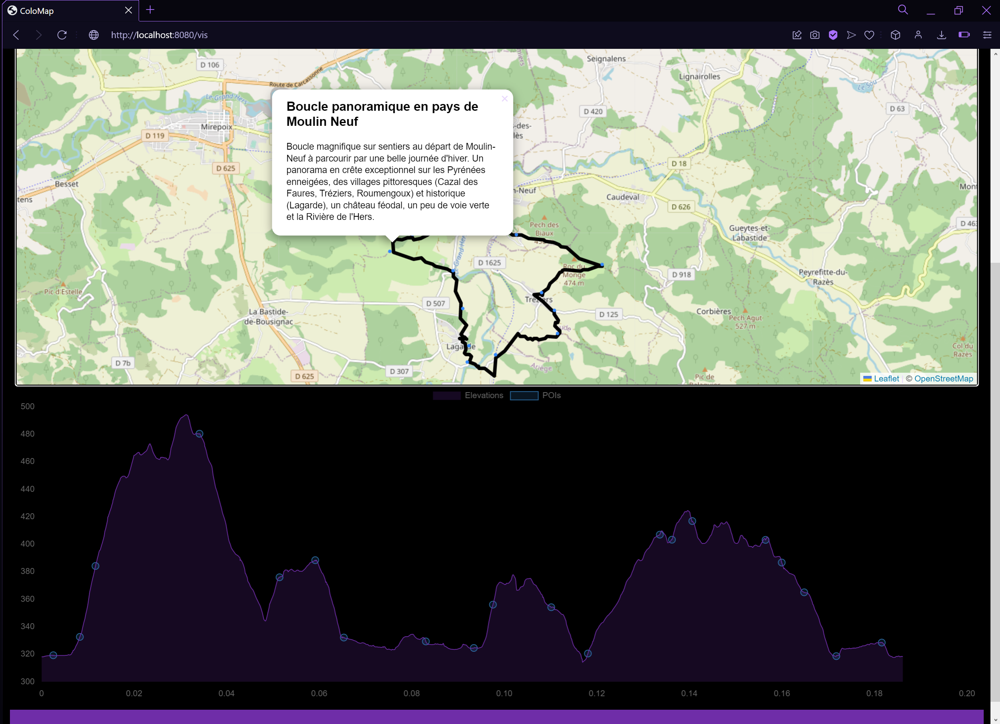
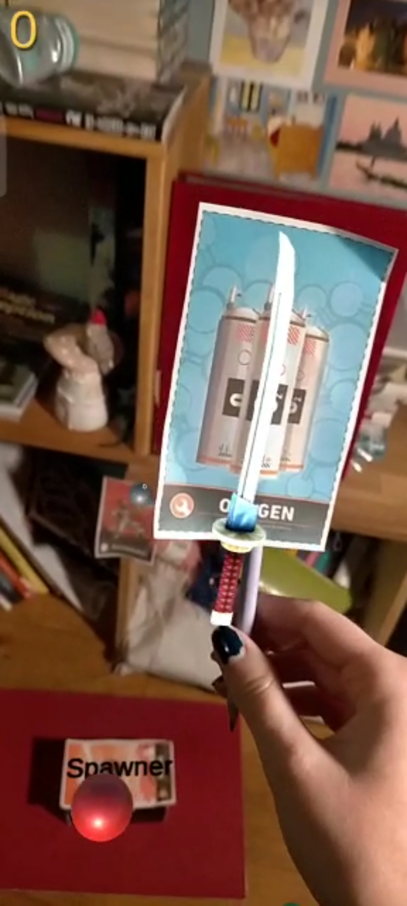

Portfolio
Work in progress
"SCP-G" (Unreal Engine 5)
Climb/Rage game & 3D-Platformer


Technical Implementation
- Blueprints (Player/Level/Platforms..)
- Spline based Meshes
- Skeleton/Rig/Mesh Pipeline
- MetaHuman bases
- LODs
Gameplay elements
- Moving/Rotating Platforms
- Jump pads
- Custom Gravity Sphere
- Rythmed platforms (on-off in rythm)
- Red-Blue platfors (Change state on jump)
- Elevators
Planned
- More of the same (longer gameplay, more plateforms types)
- Custom character (from Blender)
- UI & QoL
Goals & Scope
- Understand most of the engine's pipeline
- ~1hr gameplay (without shortcuts/cutscenes/narration/falls)
Past Work
"RogueCoon" (C++/Opengl)

Description
The game is a simple 2d rogue-like, inspired by Tiny Rogues and Nuclear Throne. The game loop is simple : defeat monsters, gather powerups, clear levels, repeat.
Details
- Optimized OpenGl 2D Raymarching
- Aseprite import pipeline
- Component-based entities & JSON prefabs
- Custom "Immediate UI" (IMUI) (See ImGui )
- TTF Font support and JSON based custom glyphs
- Minimal P2P/Net (via RaspberryPI server)
- Audio (Using fmod)
Asteroids Remake (C++/DX11)
Description
N.B : Shown FPS are a projection based on frame time, they are effectively locked behind the scene.
Details
- Custom IMUI base & Font from bitmap
- Gameplay loop (Score & Time)
- Basic Entity system
- Audio (Using fmod)
Texturing experiments (Processing)


Description
I started this project while taking a Graphics Programming/CGI class, while getting more and more curious about the field.
The images represent 2 different materials rendered on a sphere/a plane.
XR Replay for absence in cooperative environment (Unity)
Description
During a 2 month internship, I created a replay system in an existing client-server architecture project.
This application shows a solution for coworkers working in a VR/AR environment remote that come back from a short abscence and need to catch up.
Details
Walk organization website (Node.js)

A very simple website that help organizing teams for walks with map interfaces displaying points of interests and elevation data for a given path.
Project created with a classmate while taking the web elective in University.
Description
XR Fundamentals / Cooking XR (Unity)

Description
MRTI : Fruit Ninja Remake (Unity)

Description
The image represents a prototype for the game, using a phone instead of AR glasses for testing purposes.